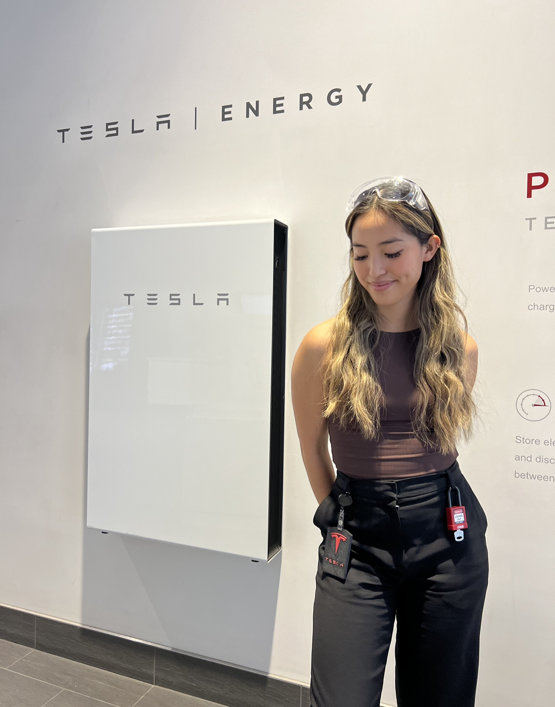

Hi! My name is Phi Lam and I am a fourth year electrical engineering student at the University of British Columbia in Vancouver. I was born in Vietnam, but I've lived in Thailand, Louisiana, Calgary, Reno, and Vancouver. I decided to pursue engineering without any previous interest, family involvement, or any true idea of what engineering was. I wanted a challenge and found that programming came very natural to me and was a creative out source for me. While pursuing electrical engineering, I became passionate in learning and developing firmware at my design team, UBC Formula Electric, and my first internship at Tesla as a firmware intern at GFNV. As time at my internship progressed, I shifted my focus to software development at Tesla as a software intern and wanted to expand my knowledge on backend. This website serves the purpose of helping me learn full stack!
